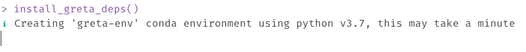
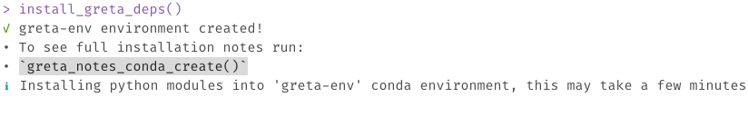
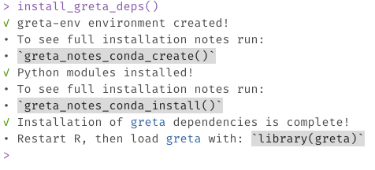
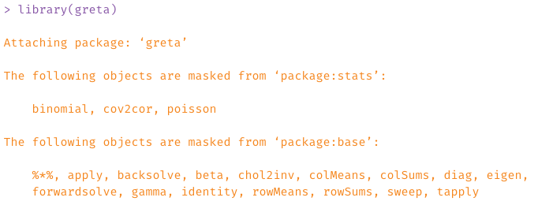
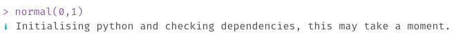
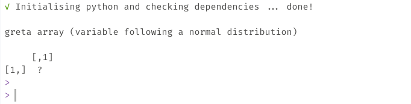
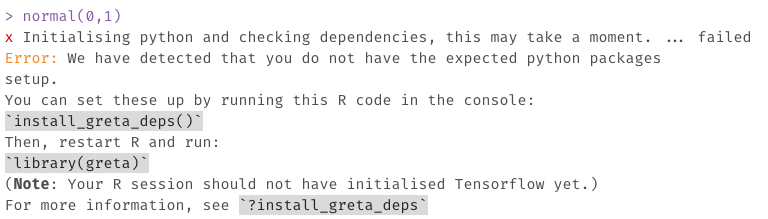

greta dependencies?Before you can fit models with greta, you will also need to have a working installation of Google’s TensorFlow python package (version 1.14.0) and the tensorflow-probability python package (version 0.7.0). In the future we will support different versions of Tensorflow and Tensorflow Probability, but currently we need these exact versions.
To assist with installing these Python packages, greta provides an installation helper, install_greta_deps(), which installs the exact pythons package versions needed. It also places these inside a “greta-env” conda environment. This isolates these exact python modules from other python installations, so that only greta will see them. This helps avoids installation issues, where previously you might update tensorflow on your computer and overwrite the current version needed by greta. Using this “greta-env” conda environment means installing other python packages should not be impact the Python packages needed by greta.
If these python modules aren’t yet installed, when greta is used, it provides instructions on how to install them for your system. If in doubt follow those.
The installation process should look something like so:



greta has the right versions of Python dependencies installed?You can check if greta has the right dependencies installed by first running library(greta), then running some greta code, such as:
This should look something like the following.
First, library(greta) gives you a message about which objects are masked from base R (these only apply to greta arrays, so will not impact other use of functions like %*%, rowMeans, etc).

Then, when you run some greta code like normal(0,1), Python will be initialised, and it will search for the dependencies it needs (tensorflow, and tensorflow probability)

When that is complete, it will look like so:

If python is not detected, or there is an issue with identifying the right python packages, you might see this error:

In which case we recommend restarting R, and re-running install_greta_deps(). If this does not work there is another installation approach below.
If the previous installation helper did not work, you can try the following:
reticulate::install_miniconda()
reticulate::conda_create(
envname = "greta-env",
python_version = "3.7"
)
reticulate::conda_install(
envname = "greta-env",
packages = c(
"numpy==1.16.4",
"tensorflow-probability==0.7.0",
"tensorflow==1.14.0"
)
)Which will install the python modules into a conda environment named “greta-env”.
If these instructions do not work for you, please post on the greta forum and we will respond to you as soon as we can.
We are still working on getting greta to work on Mac Laptops with an M1 chip. Current progress can be tracked at this issue on github.
Briefly, this is a warning that you can safely ignore. Less briefly, it means that there can be some optimisations made with a special install of tensorflow that mean it will run faster on your machine. For more details, see this stack overflow thread. We have noted this issue in this github issue, and might in the future make it easier to resolve.